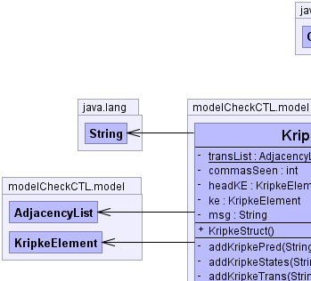
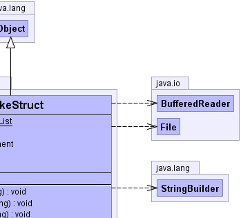
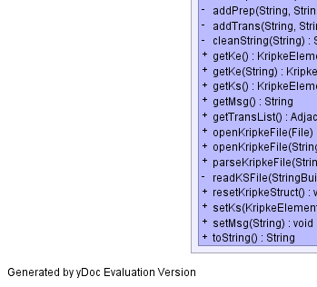
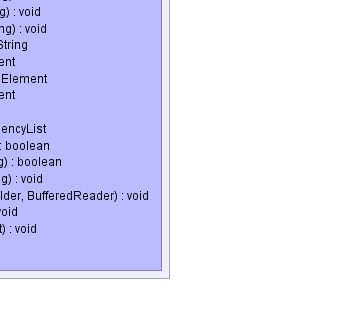

modelCheckCTL.model.KripkeStruct
modelCheckCTL.model.KripkeStruct
|
|||||||||
| PREV CLASS NEXT CLASS | FRAMES NO FRAMES | ||||||||
| SUMMARY: NESTED | FIELD | CONSTR | METHOD | DETAIL: FIELD | CONSTR | METHOD | ||||||||
java.lang.Object
public class KripkeStruct
The parser will take a text file that describes a kripke structure and build a directed graph. It will use the KripkeStruct object to do this.
|  |  |
|  |  |
| Field Summary | |
|---|---|
private int |
commasSeen
|
private KripkeElement |
headKE
|
private KripkeElement |
ke
|
private java.lang.String |
msg
|
private static AdjacencyList |
transList
|
| Constructor Summary | |
|---|---|
KripkeStruct()
Constructor |
|
| Method Summary | |
|---|---|
private void |
addKripkePred(java.lang.String in)
Label the node with the prepositions given. |
private void |
addKripkeStates(java.lang.String in)
Create the nodes of the kripke graph |
private void |
addKripkeTrans(java.lang.String in)
Create the edge list of transitions between the nodes of the graph. |
private void |
addPrep(java.lang.String state1,
java.lang.String prep)
Add the prepositions to the correct node/state object in the graph. |
private void |
addTrans(java.lang.String state1,
java.lang.String state2)
Adds the transition to the list of edges |
private java.lang.String |
cleanString(java.lang.String myString)
Remove all the extra spaces from the input to simplify the parsing. |
KripkeElement |
getKe()
|
KripkeElement |
getKe(java.lang.String s)
Search for a state in the graph with a given name. |
KripkeElement |
getKs()
|
java.lang.String |
getMsg()
This message is set by the Exception and by successful parsing and labeling of the kripke structure. |
AdjacencyList |
getTransList()
Get the list of transitions for all the states in the graph. |
boolean |
openKripkeFile(java.io.File f)
Given a file handle open a file and return true if successful. |
boolean |
openKripkeFile(java.lang.String f)
Given a string - path to a file open the file and return true if successful. |
void |
parseKripkeFile(java.lang.String in)
Parse the file that describes the kripke structure and create a directed graph. |
private void |
readKSFile(java.lang.StringBuilder contents,
java.io.BufferedReader input)
Read the file and parse it out. |
void |
resetKripkeStruct()
Reset the kripke structure to evaluate another formula. |
void |
setKs(KripkeElement ke)
|
void |
setMsg(java.lang.String msg)
|
java.lang.String |
toString()
|
| Methods inherited from class java.lang.Object |
|---|
clone, equals, finalize, getClass, hashCode, notify, notifyAll, wait, wait, wait |
| Field Detail |
|---|
private KripkeElement ke
private static AdjacencyList transList
private KripkeElement headKE
private int commasSeen
private java.lang.String msg
| Constructor Detail |
|---|
public KripkeStruct()
| Method Detail |
|---|
public void parseKripkeFile(java.lang.String in)
throws ModelException
in - String
ModelExceptionprivate void addKripkeStates(java.lang.String in)
in - String
private void addKripkeTrans(java.lang.String in)
throws ModelException
in - String
ModelException
private void addTrans(java.lang.String state1,
java.lang.String state2)
throws ModelException
state1 - Stringstate2 - String
ModelException
private void addKripkePred(java.lang.String in)
throws ModelException
in - String
ModelException
private void addPrep(java.lang.String state1,
java.lang.String prep)
throws ModelException
state1 - Stringprep - String
ModelExceptionprivate java.lang.String cleanString(java.lang.String myString)
myString - String
public KripkeElement getKs()
public void setKs(KripkeElement ke)
public boolean openKripkeFile(java.lang.String f)
throws ModelException
f - String
ModelException
public boolean openKripkeFile(java.io.File f)
throws ModelException
f - File handle
ModelException
private void readKSFile(java.lang.StringBuilder contents,
java.io.BufferedReader input)
throws java.io.IOException,
ModelException
contents - StringBuilderinput - BufferedReader
java.io.IOException
ModelExceptionpublic java.lang.String toString()
toString in class java.lang.Objectpublic AdjacencyList getTransList()
public KripkeElement getKe()
public KripkeElement getKe(java.lang.String s)
throws ModelException
s - String name of state
ModelExceptionpublic void resetKripkeStruct()
public java.lang.String getMsg()
public void setMsg(java.lang.String msg)
|
|||||||||
| PREV CLASS NEXT CLASS | FRAMES NO FRAMES | ||||||||
| SUMMARY: NESTED | FIELD | CONSTR | METHOD | DETAIL: FIELD | CONSTR | METHOD | ||||||||